Connecting Master Calendar to Your EMS Database
A connector is a direct feed from your EMS database to your Master Calendar database. If you are an EMS customer and a Master Calendar customer, a connector prevents you from having to carry out double entry of your events. You can enter all your events once into your EMS system, then use a connector to import one or more, or all your EMS events into Master Calendar.
This topic will provide information that will allow you to:
- Confirm and Install New License
- Add a Connector
- Filter EMS events
- Specify the Frequency of the Data Import
- Activate a Connector
- Deactivate a Connector
- Edit a Connector
- Purge a Connector
- Run a Connector
- Delete a Connector
- Generate a Connectors List Report
- View History for a Connector
Managing connectors in EMS Master Calendar consists of adding a connector, filtering the events to import, setting the frequency of the import, activating and inactivating connectors, editing a connector, running a connector, purging a connector, and deleting a connector. You can also generate a Connectors List report and you can view the history for a connector.
Note: As with data sources, the Connector function requires that your organization purchase the optional module, Master Calendar Data Connectors.
Confirm and Install New License
In order to use the Master Calendar Data Connectors, an organization must be properly licensed. If unsure about whether the EMS Data Connector Module has been purchased, log into the Master Calendar site, go to the systemcheck.aspx page, click the License Information heading and review the Licensed For list and look for a description to state “EMS Connector.”
If an organization was not previously licensed for the EMS Data Connector Module but is now, update the registration information by logging in to the Master Calendar, going to Admin – Site Administration - Registration, entering the new licenses information then click Save License Data. Please note, the license information is case sensitive and needs to be entered in exactly how it was provide from EMS Software.
After entering the registration information, Master Calendar must re-read the license by going to the systemcheck.aspx page, clicking the License Information heading and then clicking Read License. At the very top of the page, it should state “License read successfully.”
Add a Connector
- On the Admin menu, point to Events & Special Dates, and then click Connectors. The Connectors page opens. By default, the Active tab is the opened tab. All the currently active connectors in Master Calendar are displayed on this tab.
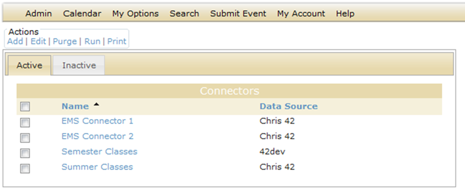
- Under Actions, click Add. A Data Source list is displayed.
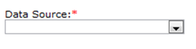
- Select the data source that you want to use for the connector. The Details tab opens. You use the options on this tab to add the basic information for the connector.
Tip:Remember, the data source is for the connection to the EMS database, and you must also use a connector to import UDFs into your Master Calendar database. If you do not see the data source that you want to use for the connector, then it has not been created.
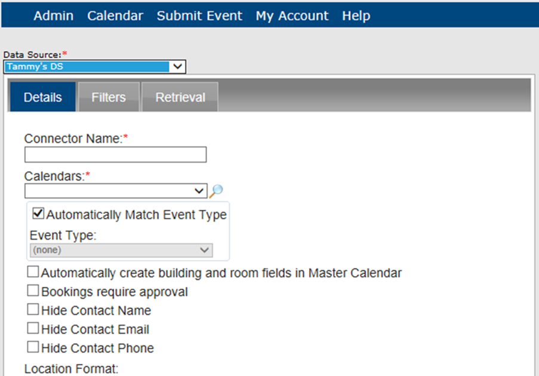
- Enter the information for the connector.
Details Tab Fields
|
Field |
Description |
|---|---|
|
Connector Name |
The title or the name for the connector. |
|
Calendars |
A list of all active calendars to which you have access as a Calendar Manager. Click the Lookup icon to open the Calendars dialog box and select the calendar or calendars to which you are importing the EMS events. |
|
Automatically Match Event Type |
Selected by default. If you leave this option selected, then every event type in the selected data source is mapped according to the event type mapping that you carried out for the data source. If you clear this option, then the Event Types dropdown list becomes available. |
|
Event Type |
Available only if you clear the Automatically Match Event Type option. Every event type in the selected data source will be mapped to the MC event type that you select on this dropdown list. |
|
Bookings Require Approval |
If you select this option, the imported events will follow the approval workflow for the Manage Events option. See Managing Events in the Master Calendar User’s Manual. |
|
Hide Contact Name |
If you select this option, the name of the event’s contact person does not show on the calendars to which the event is imported. |
|
Hide Contact Phone Number |
If you select this option, the contact phone number for the event does not show on the calendars to which the event is imported. |
|
Hide Contact Email |
If you select this option, the contact email for the event does not show on the calendars to which the event is imported. |
|
Location Format |
Determines the location format that is imported from EMS. For example, if one of the buildings for an event type is the Strong building, you can indicate whether you want to import the EMS Building Description (STRONG) or the EMS Building Code (STR). Eight options are available: • Building Code - Room Code • Building Code - Room Description • Building Description - Room Code • Building Description - Room Description • Building Code • Building Description • Room Code • Room Description |
Filter EMS events
When you filter the EMS events, you must select at least one event type, one status, and one group type, or no events are pulled from your EMS database into your Master Calendar database.
- Click the Filters tab to open it. The Buildings label, Rooms label, Group Types label, and Group label that you see on the Filters tab are brought over from the EMS Data source. You configure these labels in the EMS Database under System Administration > Settings > Parameters. Asterisks next to Event Types, Statuses, and Group Types indicate the EMS Display on Web setting for the item.
- Select at least one event type, one status, and one group type. CTRL-click to select multiple event types, statuses, and group types.
- If you do not select any specific groups for a group type, then EMS events tied to all groups are pulled. Optionally, to filter the connector based on the EMS events for a specific group:
- Click Add to open an EMS Master Calendar Group Lookup dialog box.
- In the Filter field, specify the search criteria for the group, and then click Go. The search is limited to the exact order of characters in the search string, and the string must begin with the information for which you are searching. The string is not case-sensitive. For example, if you enter “admin” as your search string for All groups, “Administrators” is returned in the search results, but DnsAdmins is not.
- From the search results, select the group that is to be used as a filter (CTRL-click to select multiple groups), and then click Add to move the groups to the Groups list. To remove groups, select the department (CTRL-click to select multiple groups), and then click Remove
- Optionally, select (All) to pull EMS events booked in all EMS buildings, or pick a specific building. If you pick a specific building, you must also select the building rooms. To select all rooms for a building a single step, click the Move All (>>) button.
- Optionally, to filter the EMS events based on a specific response to a specific UDF, select the UDF on the User Defined Fields dropdown list, and select the answer on the Answer dropdown list.
Specify the Frequency of the Data Import
The frequency of the data import means how often are you querying the EMS database. The greater the frequency, the more current is the “synch up” between your EMS database and your Master Calendar database.
- Click the Data Retrieval tab to open it.
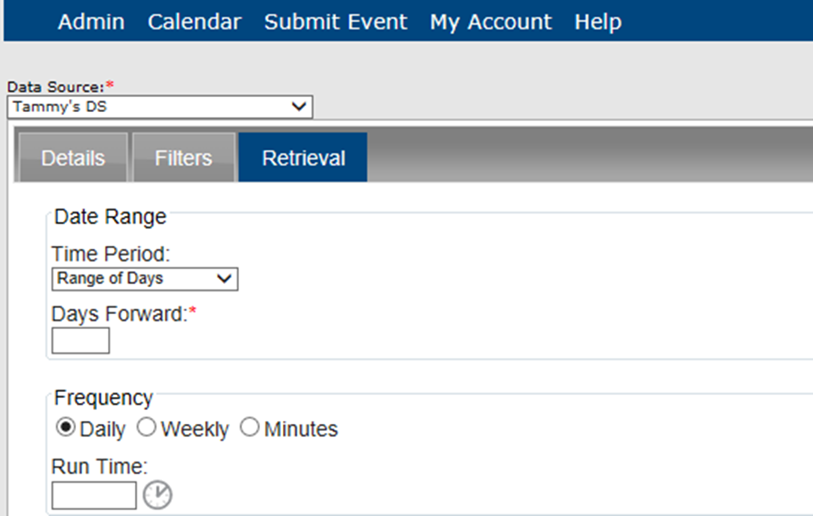
- Specify the information for the frequency of the data retrieval.
Data Retrieval Tab Fields
|
Field |
Description |
|---|---|
|
Time Period |
The time frame for which the events are to be imported. Two values are available: • Range of Days (default value)—If you select this value, you must also specify a Days Forward value. • Specific Dates—If you select this value, the Days Forward field is removed from the tab. Fields for specific dates are displayed instead. |
|
Days Forward |
Available only if you select Range of Days for the Time Period. Indicates the number of days into the future from the current day’s date that the event types are to be imported from the EMS database. |
|
Start Date/End Date/No End Date |
Available only if you select Specific Dates for the Time Period. You must enter a start date. You must enter an end date, or you must select No End Date. Note: If you select No End Date, then all future events are pulled. |
|
Frequency |
Indicates how often you are querying the EMS database. • Daily—If you select this option, you must also indicate the run time for the data import. (For example, daily at 1:30 a.m.) • Weekly—If you select this option, you must also indicate the day of the week and the run time for the data import. (For example, every Wednesday at 2:00 p.m.) • Minutes—If you select this option, you must indicate the intervals (in minutes) of the data import. (For example, every 15 minutes.) |
- Click Save. The connector is saved as an active connector in Master Calendar.
Activate a Connector
- On the Admin menu, point to Events & Special Dates, and then click Connectors. The Connectors page opens. By default, the Active tab is the opened tab. All the currently active connectors in Master Calendar are displayed on this tab.
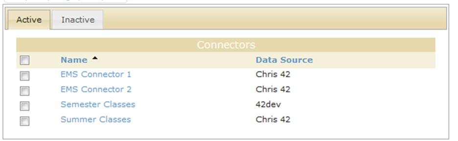
- Click the Inactive tab to open. All currently inactive connectors in Master Calendar are displayed on this tab.

- Select the connector that you are activating.
- Under Actions, click Edit. The Details tab opens. The Inactive option is selected.
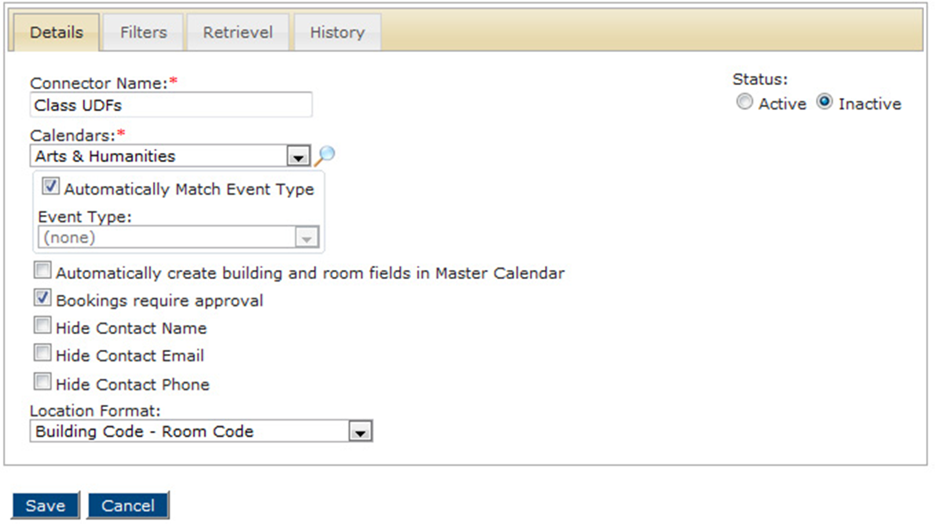
- Select Active.
- Click Save. The connector is saved and is displayed on the Active tab on the Connectors page.

Deactivate a Connector
- On the Admin menu, point to Events & Special Dates, and then click Connectors. The Connectors page opens. By default, the Active tab is the opened tab. All the currently active connectors in Master Calendar are displayed on this tab.

- Select the connector that you wish to de-activate.
- Under Actions, click Edit. The Details tab opens. The Active option is selected.
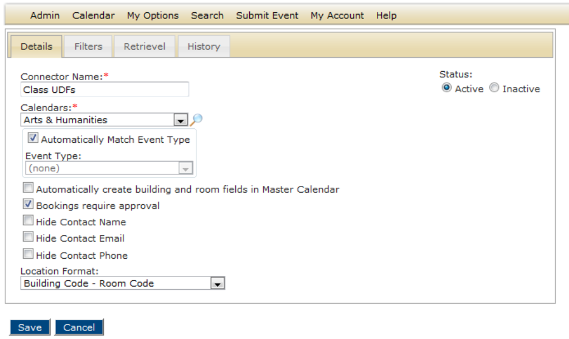
- Select Inactive.
- Click Save. The connector is saved and is displayed on the Inactive tab on the Connectors page.
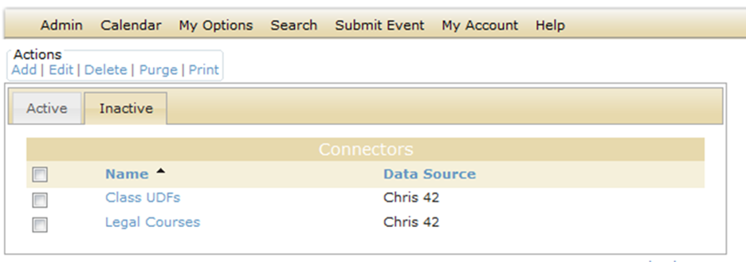
Edit a Connector
You can edit both active and inactive connectors.
- On the Admin menu, point to Events & Special Dates, and then click Connectors. The Connectors page opens. By default, the Active tab is the opened tab. All the currently active connectors in Master Calendar are displayed on this tab.
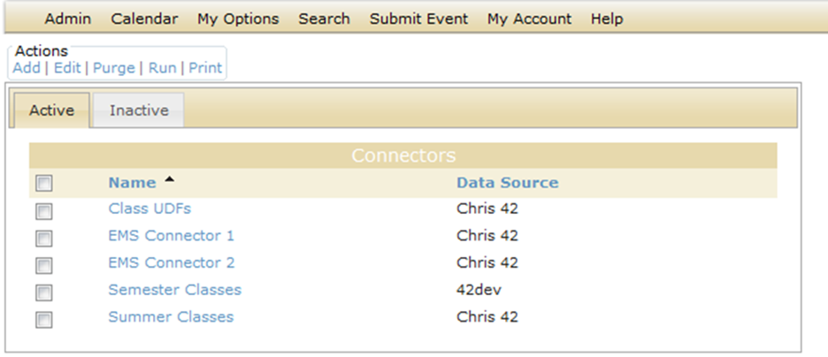
- If needed, click the Inactive tab to open it.
- Select the connector that you are editing.
- Under Actions, click Edit. The Details tab opens.
- Edit the information as needed for the connector.
Details Tab Fields
|
Field |
Description |
|---|---|
|
Connector Name |
The title or the name for the connector. |
|
Calendars |
A list of all active calendars to which you have access as a Calendar Manager. Click the Lookup icon to open the Calendars dialog box and select the calendar or calendars to which you are importing the EMS events. |
|
Automatically Match Event Type |
Selected by default. If you leave this option selected, then every event type in the selected data source is mapped according to the event type mapping that you carried out for the data source. If you clear this option, then the Event Types dropdown list becomes available. |
|
Event Type |
Available only if you clear the Automatically Match Event Type option. Every event type in the selected data source will be mapped to the MC event type that you select on this dropdown list. |
|
Bookings Require Approval |
If you select this option, the imported events will follow the approval workflow for the Manage Events option. See Managing Events. |
|
Hide Contact Name |
If you select this option, the name of the event’s contact person does not show on the calendars to which the event is imported. |
|
Hide Contact Phone Number |
If you select this option, the contact phone number for the event does not show on the calendars to which the event is imported. |
|
Hide Contact Email |
If you select this option, the contact email for the event does not show on the calendars to which the event is imported. |
|
Location Format |
Determines the location format that is imported from EMS. For example, if you are importing the Class Event type to an academic calendar in your Master Calendar system, and one of the buildings for the event type is the Strong building, you can indicate whether you want to import the EMS Building Description (STRONG) or the EMS Building Code (STR). Four combinations are possible: • Building Code - Room Code • Building Code - Room Description • Building Description - Room Code • Building Description - Room Description |
Data Retrieval Tab Fields
|
Field |
Description |
|---|---|
|
Time Period |
The time frame for which the events are to be imported. Two values are available: • Range of Days (default value)—If you select this value, you must also specify a Days Forward value. • Specific Dates—If you select this value, the Days Forward field is removed from the tab. Fields for specific dates appear instead. Specific Dates options
|
|
Days Forward |
Available only if you select Range of Days for the Time Period. Indicates the number of days into the future from the current day’s date that the event types are to be imported from the EMS database. |
|
Start Date/End Date/No End Date |
Available only if you select Specific Dates for the Time Period. You must enter a start date. You must enter an end date, or you must select No End Date. Note: If you select No End Date, then all future events are pulled. |
|
Frequency |
Indicates how often you are querying the EMS database. • Daily—If you select this option, you must also indicate the run time for the data import. (For example, daily at 1:30 a.m.) • Weekly—If you select this option, you must also indicate the day of the week and the run time for the data import. (For example, every Wednesday at 2:00 p.m.) • Minutes—If you select this option, you must indicate the intervals (in minutes) of the data import. (For example, every 15 minutes.) |
- Click Save. The edited connector is saved in EMS Master Calendar.
Purge a Connector
You can purge both active and inactive connectors. When you purge a connector, all the events that you imported into Master Calendar using the selected connector are deleted. The connector itself is not deleted. It remains available either on the Active or Inactive tab of the Connectors page.
- On the Admin menu, point to Events & Special Dates, and then click Connectors.The Connectors page opens. By default, the Active tab is the opened tab. All the currently active connectors in Master Calendar are displayed on this tab.
- If needed, click the Inactive tab to open it.
- Select the connector that you are purging.
- Under Actions, click Purge. A message opens asking you if you are sure that you want to purge all the selected connectors.
- Click OK in the message. A message opens indicating that all the selected connectors were purged.
- Click OK in the message. All the events that you imported into Master Calendar using the selected connector are deleted. The connector itself is not deleted. It remains available either on the Active or Inactive tab of the Connectors page.
Run a Connector
To manually override the frequency setting for a connector, you run a connector. After you run a connector, the connector will continue to run at its regularly scheduled times.
- On the Admin menu, point to Events & Special Dates, and then click Connectors. The Connectors page opens. By default, the Active tab is the opened tab. All the currently active connectors in Master Calendar are displayed on this tab.
- Select the connector that you are running.
- Under Actions, click Run. After the connector runs, a message opens indicating that the run was successful. It also indicates the number of records that were inserted, the number of records that were updated, and the number of records that were deleted.
Delete a Connector
You can only delete inactive connectors. To delete a currently active connector, you must first de-activate the connector. When you delete a connector, none of the events that were imported through the connector is deleted. To delete the events, you purge the data first
- On the Admin menu, point to Events & Special Dates, and then click Connectors. The Connectors page opens. By default, the Active tab is the opened tab. All the currently active connectors in Master Calendar are displayed on this tab.
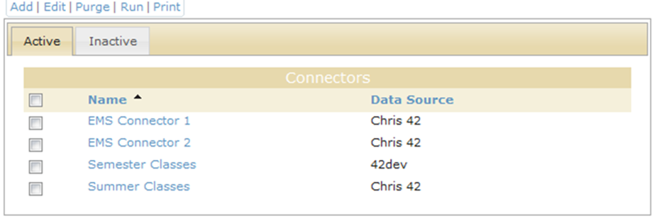
- Click the Inactive tab to open. All currently inactive connectors in Master Calendar are displayed on this tab.
- Under Actions, click Delete. A message opens asking you if you are sure that you want to delete all the selected connectors.
- Click OK in the message. A message opens indicating that all the selected connectors were successfully deleted.
- Click OK in the message. The Inactive tab is refreshed to show the remaining, if any, inactive connectors in Master Calendar.
Generate a Connectors List Report
You can generate a Connectors List report, which lists all the active or inactive connectors that are configured in Master Calendar. The report includes the connector name and data source, the connector filters, the event types that imported by the connector, and the calendars to which the event types are imported. It also indicates whether automatching for the imported event types has been selected.
- On the Admin menu, point to Events & Special Dates, and then click Connectors.The Connectors page opens. By default, the Active tab is the opened tab. All the currently active connectors in Master Calendar are displayed on this tab.
- Do one of the following:
- If you are generating a Connectors List report for all active connectors in your Master Calendar, under Actions, click Print.
- If you are generating a Connectors List report for all inactive connectors in Master Calendar, click the Inactive tab to open it, and then under Actions, click Print.
An onscreen preview of the Connectors List report opens in its own window. A variety of options are available from this preview, including (from left to right at the top of the onscreen preview) the options to search the report results, print the report in its entirety, print the currently displayed report page, and export the report to a file and save the file.
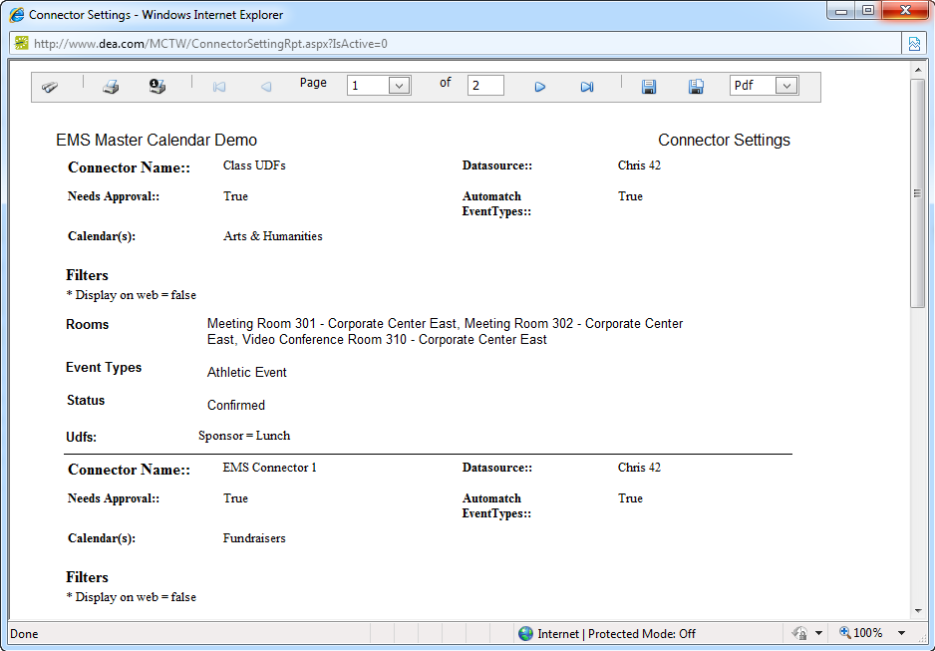
View History for a Connector
The history for a connector consists of the original creation date of the connector, the name of the user who created the connector, and the last date that the connector was edited as well as the name of the user who last edited the connector. You can view the history for both active and inactive connectors.
- On the Admin menu, point to Events & Special Dates, and then click Connectors. The Connectors page opens. By default, the Active tab is the opened tab. All the currently active connectors in Master Calendar are displayed on this tab.
- If needed, click the Inactive tab to open it.
- Select the connector for which you are viewing the history.
- Under Actions, click Edit. The Details tab opens.
- Click the History tab to open it and view the history for the selected connector.
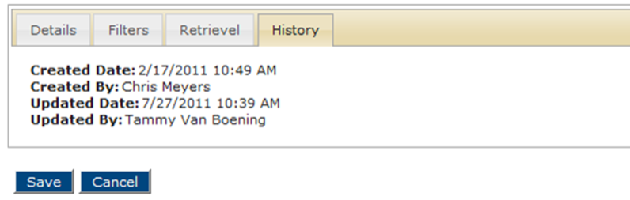